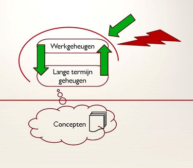

ReAttach is een (laagdrempelige) behandelmethode om persoonlijke groei te activeren of te versnellen.
Je wordt ondersteunt bij het verwerken van informatie, emoties en gebeurtenissen met een techniek die zowel lichaamsgerichte als psychologische elementen bevat. Het gaat om jezelf en anderen te accepteren en positiever in het leven te staan.
De methode is geschikt voor volwassenen, jongeren en kinderen.
ReAttach wordt o.a. toegepast door psychologen, fysiotherapeuten, artsen, logopedisten, verliesdeskundigen, gezinshulpverleners enzovoort.
Bij het werken met kinderen en jeugdigen betrekt ReAttach meestal het hele gezin. Bij volwassenen is het verstandig partners of mantelzorgers te betrekken.
ReAttach kan heel goed samengaan met andere vormen van hulp.
ReAttach is als multimodale interventie gericht op het verbeteren van de sensorische integratie en het aanleren van nieuwe vaardigheden.
De hulpverlener faciliteert cliënten in de stress- en emotieregulatie en helpt hen om op eigen kracht weer samenhangend te kunnen denken.
De methode wordt toegepast bij volwassenen en kinderen.
Deze module is een specialisatie binnen de ReAttach therapie, gericht op het behandelen van complexe problematiek.
W.A.R.A. is een oefening die ReAttach therapeuten specifiek gebruiken bij patiënten met sensorische overgevoeligheid, chronische pijn, of chronische problemen met de regulatie van emoties.
Als psychosociaal therapeut ga ik samen met jou op zoek naar waar je vraag vandaan komt en welke weg helpend voor jou gaat zijn om oplossingen te vinden. De oplossingsgerichte therapie (solution focussed) biedt een goede basis om op zoek te gaan naar eigen competenties en mogelijkheden om de problemen te lijf te gaan en tot oplossingen te komen. In deze therapie onderzoek je ook de belemmerende patronen en dieper liggende blokkades en focus je op hetgeen er al wel goed gaat en wat je wil bereiken. Hierbij sta jij als hulpvrager met jouw specifieke hulpvraag centraal.
De psychosociale therapie omvat een gevarieerd aanbod van benaderingen die ingezet kunnen worden. Belangrijk is dat je weer nieuwe perspectieven gaat zien en jouw probleemoplossend en zelfgenezend vermogen toeneemt.
Hiervoor gebruiken we veel technieken uit de oplossingsgerichte benadering, de NLP (Neuro Linguïstisch Programmeren) en o.a. mindfulness. Dit alles vinden we terug in de uitgangspunten van de positieve gezondheidszorg.